Chapter 6 – Skeletal System Guided Notes
Do Now – Tissue Review
Identify each tissue type shown and explain how you know.
|
Tissue Type/Name |
Evidence |
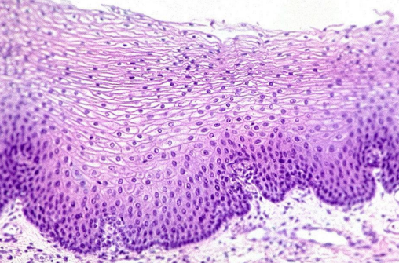 |
|
|
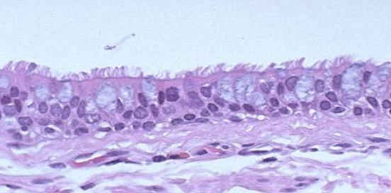 |
|
|
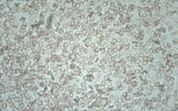 |
|
|
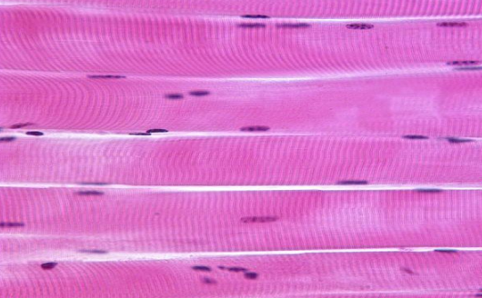 |
|
|
Skeletal System Basics
The skeletal system is made up of:
•
•
•
•
Bone exists as:
• bone
• bone
The three cartilage types are:
• cartilage
• cartilage
• cartilage
Ligaments are fibrous connective tissue that connect to .
Tendons are fibrous connective tissue that connect to .
Functions of the Skeletal System
Body Support
• Bears .
• Provides the shape and definition of our body structure.
Organ Protection
• Ribs protect the and .
• The skull surrounds the .
Body Movement
• Muscle contraction moves .
• Bone acts as a .
Storage
• Stores fat and minerals such as and .
Blood Cell Production
• bone marrow is hemopoietic.
• Hemopoietic means .
What Is Bone?
Bone is specialized tissue made up of cells and extracellular matrix.
Extracellular Bone Matrix
Organic portion = %
• Made of and proteoglycans.
• Provides slight .
Inorganic portion = %
• Made of calcium phosphate crystals called hydroxyapatite.
• Provides weight-bearing strength and .
The 3 major bone cells are:
→ →
4 Major Bone Shapes
Bone Shape |
Description |
Examples |
Key ID |
Long |
Longer than they are |
Humerus, ulna, radius; femur, tibia, fibula |
Long shaft with expanded ends |
Short |
Rounded / |
Carpals; tarsals |
Roughly cube-shaped |
Flat |
Thin; may be |
Skull bones, ribs, sternum, scapulae |
Thin plates |
Irregular |
Does not fit the first 3 categories |
Vertebrae; facial bones |
Complex shape |
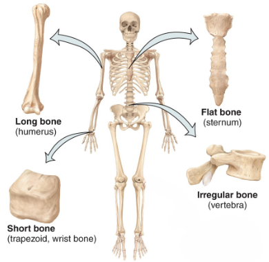
Spongy Bone vs. Compact Bone
Feature |
Spongy Bone |
Compact Bone |
Matrix / Space |
Less matrix; more open space |
Dense / solid; little open space |
Organization |
Trabeculae |
Osteon units |
Marrow / Vessels |
Red marrow + blood vessels |
Blood + lymph vessels in central canals |
Location |
Inside long bones; between compact plates |
Solid outer layer |
Key Structures |
Trabeculae |
Lamellae; lacunae; canaliculi; central canal |
Membrane |
Covered by endosteum |
Central canal lined with endosteum |
Spongy Bone
• Has less bone and more open space.
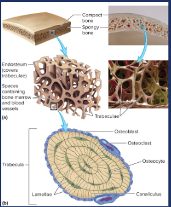
• Spaces are filled with blood vessels and bone marrow.
• Red bone marrow creates cells.
• Its open structure makes spongy bone relatively .
• Found between plates of compact bone and inside bones.
• Defined by : long, thin intersecting rods/beams of bone.
• Covered by , a thin connective tissue membrane.
Compact Bone
• Dense, solid layer of bone.
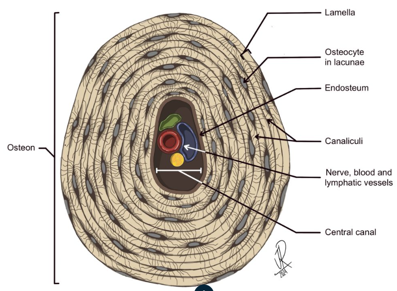
• Organized into units called .
• Concentric rings of matrix are called .
• Small pockets between lamellae are called .
• Lacunae house mature .
• Osteocytes connect through tiny canals called .
• The center of each osteon contains a canal.
• The central canal is lined with .
• Central canals contain blood and vessels.
Blood vessels from neighboring osteons connect through canals, also called perforating canals.
Long Bone Anatomy
Structure |
Location / Description |
Tissue / Contents |
Main Function |
Diaphysis |
Bone |
Mostly compact bone |
Support / leverage |
Medullary cavity |
Hollow inside diaphysis |
bone marrow = adipose tissue |
Fat storage |
Epiphysis |
End of bone |
Mostly bone with thin compact layer |
Joint region |
Articular cartilage |
Covers epiphysis |
cartilage |
Reduces friction |
Epiphyseal plate |
Between epiphysis and diaphysis |
Hyaline cartilage |
Growth in bone |
Periosteum |
Outer surface of bone |
Connective tissue |
Covers outer bone |
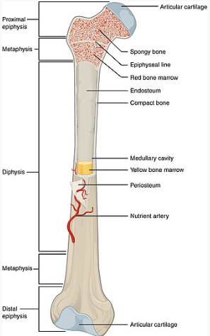
Bone Cells
Osteoblasts – Bone Building Cells
• Have extensive and numerous ribosomes.
• Produce collagen and proteoglycans that are secreted to form bone .
• Located on the surface of growing/developing bones.
Ossification = = bone deposition = formation of new bone by osteoblasts.
Ossification occurs during:
1. Embryonic and fetal
2. Bone growth from childhood into
3. Bone
4. Healing after bone
Osteocytes – Bone Maintaining Cells
• Relatively compared with osteoblasts.
• Can produce bone-matrix components when needed.
• Help control the location of bone .
• Make up about –% of bone cells.
• Have a long lifespan of about years.
• Found inside spaces called .
• Cell extensions travel through long spaces called .
Osteoclasts – Bone Destroying Cells
• Very large, cells.
• Break down bone matrix in a process called bone .
• Calcium and phosphate are released back into the .
• This process is essential to bone .
Bone remodeling:
• break down old bone.
• follow behind and build new bone.
• Occurs throughout your .
• Can be triggered by injuries, exercise, and mechanical .
Summary of Bone Cells
Bone Cell |
Main Function |
Location / Feature |
Key Term |
Osteoblast |
Builds new bone |
Surface of growing/developing bone |
Bone formation |
Osteocyte |
Maintains bone matrix |
Inside |
Connected through canaliculi |
Osteoclast |
Breaks down bone |
Bone surfaces |
Bone resorption |
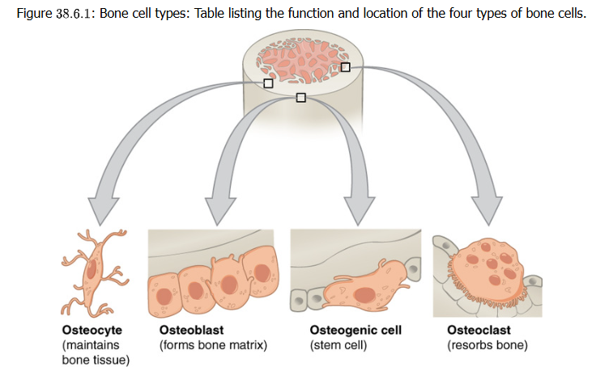
Ossification – Bone FormationThere are major types of ossification.
Intramembranous Ossification
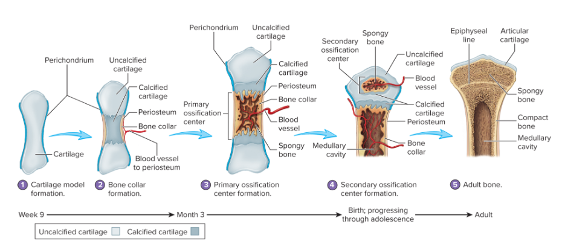
• Embryonic connective tissue → bone.
• Forms short, flat, and irregular bones such as the .
Endochondral Ossification
• cartilage → bone.
• Forms bones.
What Happens If a Bone Is Broken?
The fracture-healing sequence shown in class includes:
1. formation
2. formation
3. Callus
4. Bone
During healing:
• A hematoma forms at the break.
• Fibroblasts and chondroblasts help form a .
• Osteoblasts form new bone.
• Osteoclasts participate in final bone .
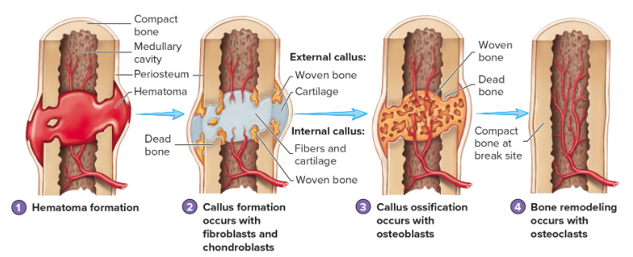
Calcium Homeostasis
Blood Ca²⁺ State |
Hormone |
Bone Effect |
Kidney Effect |
Intestine / Overall Effect |
Too LOW |
Parathyroid hormone (PTH) |
↑ osteoclast resorption → releases Ca²⁺ |
↑ Ca²⁺ uptake; produces calcitriol |
↑ intestinal Ca²⁺ absorption → raises blood Ca²⁺ |
Too HIGH |
Calcitonin (hormone) |
↓ osteoclast activity; ↑ osteoblast deposition |
↓ Ca²⁺ uptake |
More Ca²⁺ lost in urine → lowers blood Ca²⁺ |
Calcium is an important ion involved in:
• Muscle
• Neural signaling in the system
About % of the body’s calcium is stored in bone.
Blood calcium must be tightly regulated.
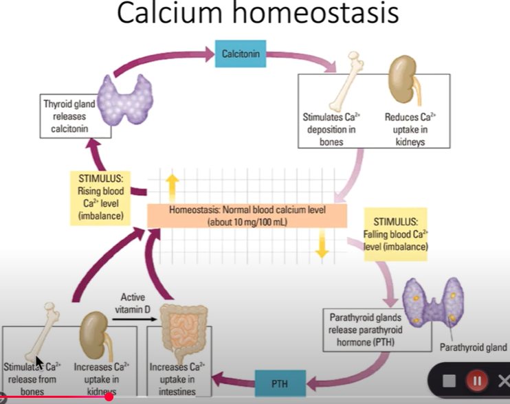
Hormones control the activity of:
• = bone deposition
• = bone resorption
Calcium homeostasis is an example of a feedback loop.
When Blood Calcium Is Too Low
The hormone is released from the parathyroid gland.
Effects:
• Increased bone by osteoclasts.
• Ca²⁺ is released from bone into the .
• Kidneys produce , the activated form of vitamin D.
• Kidneys increase calcium so more calcium remains in blood.
• The small intestine increases calcium .
When Blood Calcium Is Too High
The hormone is released by the thyroid.
Effects:
• of osteoclasts.
• Osteoclasts stop releasing as much Ca²⁺ from bone.
• Increased bone by osteoblasts.
• Osteoblasts use Ca²⁺ from the blood to build new .
• Kidneys reduce calcium .
• More calcium is lost in the .
Chapter 6 Review
List the major structures that make up the skeletal system.
List the major functions of the skeletal system.
Compare the organic and inorganic portions of bone matrix.
Name the four major bone shapes and give an example of each.
Compare spongy bone and compact bone.
Define each compact-bone structure:
Osteon:
Lamellae:
Lacunae:
Canaliculi:
Central canal:
Volkmann’s/perforating canals:
Describe the major structures of a long bone.
Compare osteoblasts, osteocytes, and osteoclasts.
Explain bone remodeling.
Compare intramembranous and endochondral ossification.
Put the four major steps of fracture healing in order.
Explain how PTH responds to low blood calcium.
Explain how calcitonin responds to high blood calcium.
Why is calcium homeostasis considered a negative-feedback loop?